Dnes – bubliny polí dlaždíc
Pole Dnes malo v nadpise krúžok s i a ťukalo sa len naň. Návrh: šípka namiesto i, ťuká sa na celé pole, a bublina aj pre ostatné polia pásu. Vybrané 27. 11. 2026 v dotazníku: V3 + A, všetky šípky rovnakou farbou.
Šípka
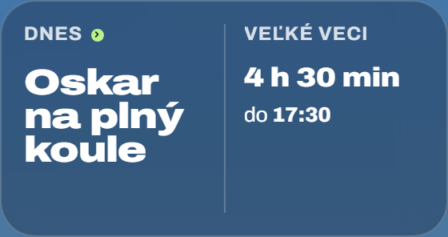
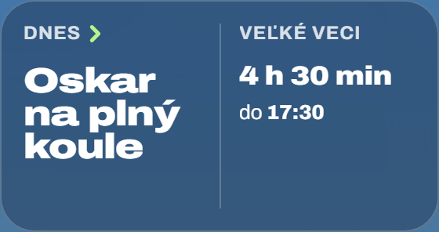
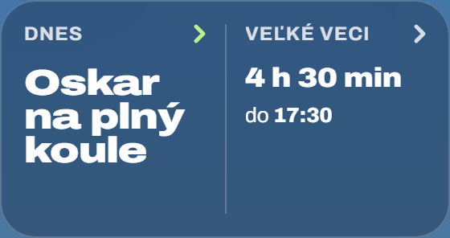
Rozhodnuté V3: šípka v pravom hornom rohu každej polovice, ktorá má bublinu, na všetkých poliach vo farbe nadpisu
(farba triedy dňa na Dnes zmizla - povie ju bublina a meno tlačidla pre čítačku). Ťuká sa na celú polovicu dlaždice:
tlačidlo .cast-tap ju prekryje až po okraj skla. Šípka stojí v medzere za kartou, aby sa „Najviac slnka“
pri 360 px zmestilo celé (pri 320 px sa orezávalo už predtým).
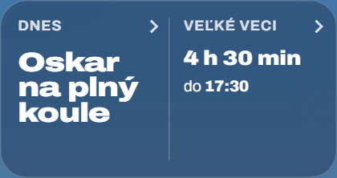
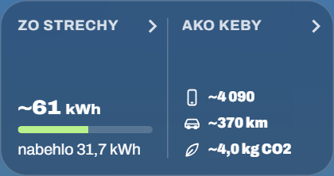
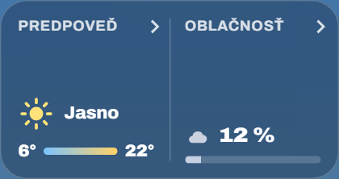
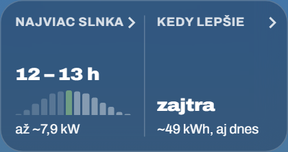
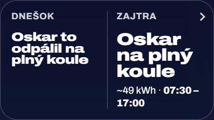
Čo sa otvorí
- A · spodný panel ako Dnes - vybrané. Jednotné, priestor na graf, Späť ho zavrie.
- B · skok na kartu, kde to už je (7 dní, Plán dňa) - skoro bez kódu, ale odíde z karty Dnes.
- C · malá bublina pri dlaždici - graf sa do nej nezmestí.
Bubliny
Dnes a Zajtra si nechali vysvetlenie triedy dňa. Ostatné polia dostali obrázok toho, čo pole hovorí len číslom. Model je
shared/dnes-bubliny.js, kreslí web/render/mozem-bubliny.js. Predpoveď potrebovala teplotu po
hodinách - predpoveď dňa ju odteraz nesie (temp v hodinách dňa, shared/solar.js); staršia
predpoveď z cache ju nemá a bublina ukáže hodiny bez čísla.
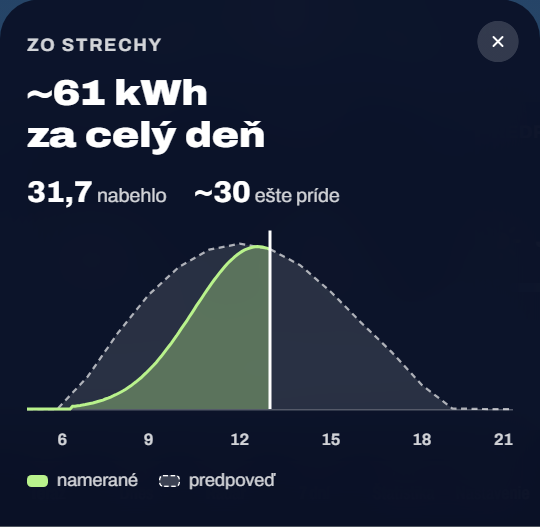
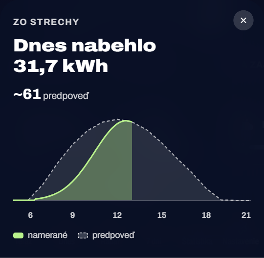
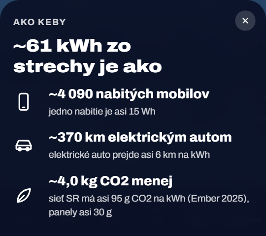
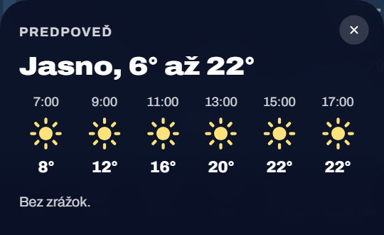
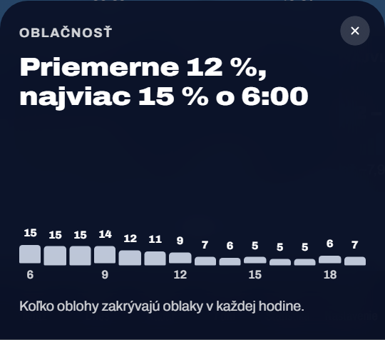
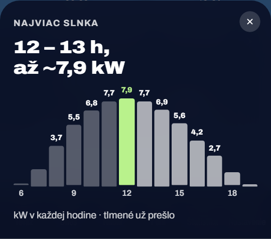
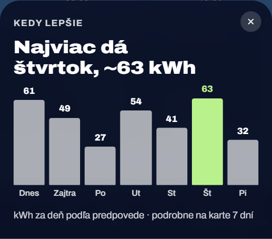
Oblačnosť má oproti náhľadu v dotazníku percento nad každým stĺpcom namiesto mriežky 50 a 100 % - popisky mriežky v paneli zavadzali nadpisu.